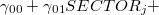
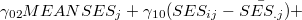
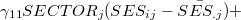

| 階層的線形モデルによるデータ分析の実際1 — HLM6，SAS，Rを利用して — |
| 階層的線形モデルによるデータ分析の実際1 — HLM6，SAS，Rを利用して — |
階層的線形モデルは，何もHLM6を用いてしか分析できないというわけではない。 1 基本的に階層的線形モデルは線形混合モデルと考えることができるので，線形混合モデルを扱えるソフトウェアであれば階層的線形モデルによる分析を行うことができる。
ここでは，SASにおいて混合モデルを扱うためのMIXEDプロシジャを用いて階層的線形モデルによる分析を行う方法について簡単に説明する。
SAS PROC MIXEDでは，HLM6とモデル式の表し方が若干異なる。
 |
 | (7) | ||
 |
 | (8) | ||
|
 | (9) | ||
|
![$\displaystyle \gamma _{12} MEANSES_{j} (SES_{ij} - \bar{SES_{.j}})] + \notag $](images/img-0058.png) |
(10) | ||
|
![$\displaystyle [ u_{0j} + u_{1j} (SES_{ij} - \bar{SES_{.j}}) + r_{ij} ] \label{eq.tougou} $](images/img-0059.png) |
(11) |
となる。 このうち，最初の[ ]内は固定効果であり，2番目の[ ]内は変量効果である。 HLM6ではレベルごとに分けた式を入力できたのに対し，SAS（およびこの後で触れるR）においては，すべてのレベルを統合したモデル式(11)をもとに固定効果と変量効果の部分を分けて記述することになる。 SAS PROC MIXEDを用いた階層的モデルの分析方法について，詳しくは，Singer(1998)を参照されたい。
以下に，HSBデータを用いてHLM6を用いて行ったのと同じ分析をするためのプログラムの一例とその結果の出力を示した。
***************************;
* SASによるHSBデータの分析 ;
* By Taichi OKUMURA ;
***************************;
OPTIONS ls = 80;
/* データの読み込み */
DATA hsb;
INFILE 'C:\Program Files\SAS Institute\SAS\V8\hsb-sas.dat';
INPUT id school ses mathach meanses cses sector;
RUN;
/* proc mixedによる分析 */
PROC MIXED DATA=hsb NOCLPRINT COVTEST;
CLASS school;
MODEL mathach = sector
meanses
cses
sector*cses
meanses*cses / SOLUTION DDFM=bw NOTEST;
RANDOM intercept cses / TYPE = un SUB=school;
RUN;
QUIT;
以下に，MIXEDプロシジャの部分を簡単に説明しておく。
集団（この場合はschool）ごとの結果は出力しない
分散要素の検定を行う
schoolは数値ではなく，カテゴリ変数。
この部分には固定効果の式を書く。
固定効果の推定値を出力させる
固定効果の検定の際の自由度の設定
固定効果に関する仮説検定を行わない
この部分には変量効果の式を書く。
分散・共分散行列に構造を仮定しない
今回の例では，個々の生徒の観測値は学校（"school"）にネストされている
上記のプログラムを実行したときのアウトプットを以下に示す。 2
SAS システム
The Mixed Procedure
Model Information
Data Set WORK.HSB
Dependent Variable mathach
Covariance Structure Unstructured
Subject Effect school
Estimation Method REML /* REML推定（デフォルト） */
Residual Variance Method Profile
Fixed Effects SE Method Model-Based
Degrees of Freedom Method Between-Within
Dimensions
Covariance Parameters 4
Columns in X 6
Columns in Z Per Subject 2
Subjects 160
Max Obs Per Subject 67
Observations Used 7185
Observations Not Used 0
Total Observations 7185
Iteration History
Iteration Evaluations -2 Res Log Like Criterion
0 1 46724.22627510
1 2 46503.66454957 0.00000010
2 1 46503.66286827 0.00000000
Convergence criteria met.
Covariance Parameter Estimates
Standard Z
Cov Parm Subject Estimate Error Value Pr Z
/* レベル2の分散・共分散の推定値と有意性検定の結果 */
UN(1,1) school 2.3794 0.3714 6.41 <.0001
UN(2,1) school 0.1918 0.2043 0.94 0.3479
UN(2,2) school 0.1012 0.2138 0.47 0.3180
/* レベル1の分散の推定値と有意性検定の結果 */
Residual 36.7212 0.6261 58.65 <.0001
Fit Statistics
-2 Res Log Likelihood 46503.7 /* deviance */
AIC (smaller is better) 46511.7
AICC (smaller is better) 46511.7
BIC (smaller is better) 46524.0
Null Model Likelihood Ratio Test
DF Chi-Square Pr > ChiSq
3 220.56 <.0001
/* 固定効果（レベル2の偏回帰係数）の推定結果・有意性検定 */
Solution for Fixed Effects
Standard
Effect Estimate Error DF t Value Pr > |t|
Intercept 12.1279 0.1993 157 60.86 <.0001 /* G00 */
sector 1.2266 0.3063 157 4.00 <.0001 /* G01 */
meanses 5.3329 0.3692 157 14.45 <.0001 /* G02 */
cses 2.9450 0.1556 7022 18.93 <.0001 /* G10 */
sector*cses -1.6427 0.2398 7022 -6.85 <.0001 /* G11 */
meanses*cses 1.0392 0.2989 7022 3.48 0.0005 /* G12 */
Footnotes
 " 〜 "
" 〜 " "の部分はコメントである。
"の部分はコメントである。| 階層的線形モデルによるデータ分析の実際1 — HLM6，SAS，Rを利用して — |